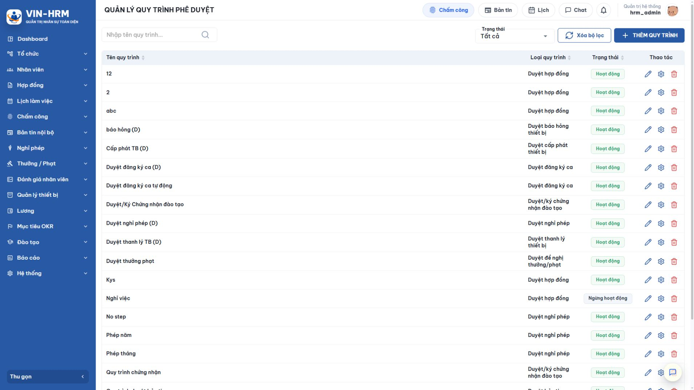
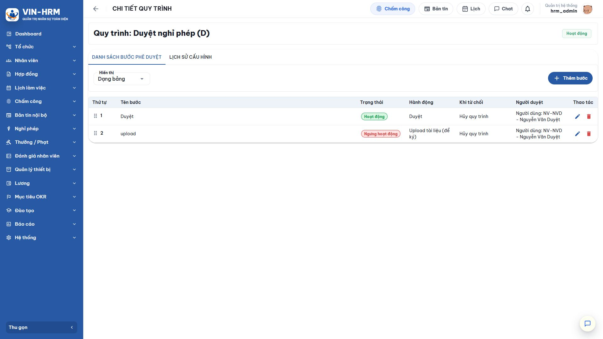
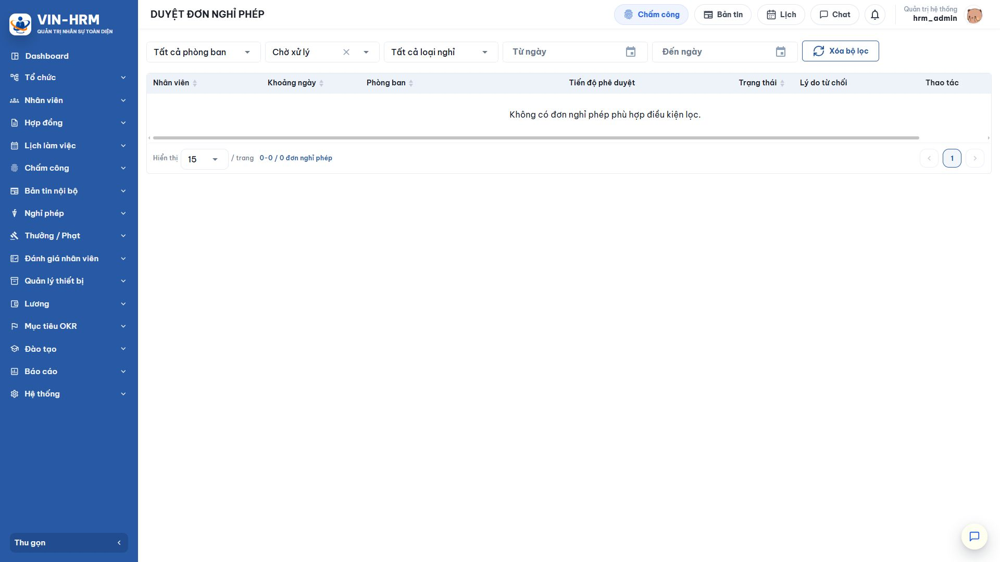

1. Mục đích và phạm vi
Phê duyệt đơn nghỉ phép là quá trình người có thẩm quyền kiểm tra nhu cầu nghỉ, lịch làm việc, loại nghỉ, số giờ/ngày nghỉ và tính phù hợp với hoạt động của đơn vị trước khi chấp thuận hoặc từ chối. Mỗi người chỉ xử lý bước đang được giao cho mình; đơn có thể đi qua nhiều bước trước khi có kết quả cuối cùng.
Tài liệu hướng dẫn người duyệt mở danh sách công việc, đọc thông tin đơn, phê duyệt, từ chối, theo dõi lịch sử và hiểu các tác động sau bước cuối. Phần thiết kế quy trình được giải thích ở mức cấu hình có ảnh hưởng trực tiếp đến nghỉ phép; thao tác quản trị đầy đủ nằm trong tài liệu “Quản lý quy trình phê duyệt”.
1.1. Luồng phê duyệt tổng quát
| 1. Nhân viên gửi đơn Đơn Bản nháp chuyển sang Chờ duyệt và tạo hồ sơ theo quy trình Duyệt nghỉ phép đã chọn. |
| ↓ |
| 2. Hệ thống xác định bước đầu tiên Chỉ người được cấu hình tại bước đang hoạt động nhìn thấy đơn trong danh sách Chờ xử lý. |
| ↓ |
| 3. Người duyệt kiểm tra đơn Đối chiếu nhân viên, ngày/ca nghỉ, loại nghỉ, số giờ, lý do, số dư và lịch sử quy trình. |
| ↓ |
| 4. Quyết định: Phê duyệt hay Từ chối? |
| ↓ |
| PHÊ DUYỆT ↓ Còn bước tiếp theo? ↓ Có Chuyển đến người duyệt kế tiếp ↓ Không Hoàn tất và ghi nhận hiệu lực nghỉ | HOẶC | TỪ CHỐI ↓ Nhập lý do từ chối ↓ Hủy phần còn lại của quy trình ↓ Đơn chuyển Từ chối, không trừ phép |
1.2. Ba khái niệm cần phân biệt
| Khái niệm | Giải thích |
|---|---|
| Trạng thái đơn | Trạng thái tổng thể của yêu cầu: Bản nháp, Chờ duyệt, Đã duyệt hoặc Từ chối. |
| Trạng thái xử lý của tôi | Chờ xử lý khi bước hiện tại được giao cho tài khoản; Đã xử lý khi tài khoản đã duyệt/từ chối một bước hoặc nhiệm vụ không còn chờ thao tác. |
| Tiến độ phê duyệt | Cho biết đơn đang ở bước nào trong toàn bộ chuỗi, ví dụ bước 1/2 hoặc đã hoàn tất. |
2. Điều kiện và cấu hình quy trình liên quan
2.1. Điều kiện để người duyệt nhận được đơn
- Quy trình được chọn trên đơn có loại Duyệt nghỉ phép và trạng thái Hoạt động.
- Quy trình có ít nhất một bước hoạt động, sắp xếp đúng thứ tự.
- Bước hiện tại xác định được người duyệt hợp lệ và tài khoản người duyệt đang hoạt động.
- Nhân viên/đơn vị của người đăng ký nằm trong phạm vi áp dụng của quy trình.
- Người duyệt có quyền truy cập chức năng và phạm vi dữ liệu cần thiết.
2.2. Quy trình loại Duyệt nghỉ phép
Quản trị viên mở Hệ thống > Quy trình phê duyệt và lọc loại quy trình Duyệt nghỉ phép. Một doanh nghiệp có thể có nhiều quy trình cho các nhóm tổ chức khác nhau; nhân viên chọn quy trình phù hợp khi tạo đơn.

| Cấu hình | Ý nghĩa | Ảnh hưởng |
|---|---|---|
| Loại quy trình | Phải là Duyệt nghỉ phép. | Quy trình loại khác không xuất hiện hoặc không được chấp nhận trên biểu mẫu đơn nghỉ. |
| Trạng thái Hoạt động | Cho phép tạo hồ sơ phê duyệt mới. | Ngừng hoạt động giữ lịch sử cũ nhưng không nên dùng cho đơn mới. |
| Phạm vi áp dụng | Doanh nghiệp, chi nhánh, phòng ban hoặc nhóm nhân viên được phép dùng quy trình. | Nếu phạm vi không bao gồm người đăng ký, quy trình không xuất hiện hoặc không xác định được bước xử lý. |
| Thứ tự bước | Thứ tự người duyệt phải hoàn thành. | Bước sau chỉ nhận nhiệm vụ khi bước trước đã phê duyệt. |
| Người duyệt | Tài khoản, vai trò hoặc đối tượng được cấu hình để xử lý bước. | Chỉ người được xác định tại bước hiện tại mới có thể ra quyết định. |
| Khi từ chối | Cách quy trình phản ứng khi một bước từ chối. | Với lựa chọn Hủy quy trình, các bước sau không chạy và đơn chuyển Từ chối. |
2.3. Các hành động bước có thể gặp

| Hành động | Ý nghĩa | Khi dùng |
|---|---|---|
| Duyệt | Người xử lý chọn Phê duyệt hoặc Từ chối trực tiếp trên hồ sơ. | Là hành động thông dụng cho đơn nghỉ phép. |
| Tải tài liệu để ký | Bước yêu cầu đưa tài liệu đã ký lên hệ thống. | Chỉ dùng khi quy trình nghỉ phép nội bộ thực sự yêu cầu hồ sơ ký kèm; nếu không cần nên để bước ngừng hoạt động. |
| Hoạt động | Bước được đưa vào chuỗi xử lý. | Phải xác định được người duyệt hợp lệ. |
| Ngừng hoạt động | Bước được giữ trong cấu hình nhưng không tham gia luồng mới. | Dùng khi tạm bỏ một bước mà vẫn cần giữ lịch sử cấu hình. |
| Người duyệt ngừng hoạt động Nếu tài khoản/người duyệt của bước hiện tại không còn hoạt động, đơn có thể bị dừng. Quản trị viên cần dùng chức năng quản lý quy trình để phân công lại đúng thẩm quyền; không thay đổi dữ liệu đơn bằng cách thủ công. |
3. Mở danh sách Duyệt đơn nghỉ phép
Mở Nghỉ phép > Duyệt đơn nghỉ phép. Danh sách mặc định hiển thị các đơn nằm trong phạm vi và nhiệm vụ của tài khoản. Nếu không có đơn, màn hình vẫn hiển thị bộ lọc và cấu trúc cột; điều này không có nghĩa toàn hệ thống không có yêu cầu nghỉ.

| Bộ lọc/cột | Cách hiểu |
|---|---|
| Phòng ban | Giới hạn theo đơn vị của người đăng ký trong phạm vi được phép xem. |
| Trạng thái xử lý | Chờ xử lý: cần thao tác; Đã xử lý: tài khoản đã xử lý hoặc nhiệm vụ đã kết thúc. |
| Loại nghỉ | Lọc Nghỉ có lương hoặc Nghỉ không lương. |
| Từ ngày/Đến ngày | Lọc theo khoảng ngày nghỉ cần xem. |
| Tiến độ phê duyệt | Cho biết bước hiện tại so với tổng số bước. |
| Trạng thái đơn | Chờ duyệt, Đã duyệt hoặc Từ chối. |
| Lý do từ chối | Hiển thị nội dung người xử lý nhập khi từ chối, nếu có. |
| Ngày gửi | Thời điểm đơn được gửi vào quy trình, dùng để theo dõi thời gian chờ. |
4. Kiểm tra nội dung đơn trước khi xử lý
4.1. Các bước kiểm tra
- Tại danh sách Chờ xử lý, mở đơn cần duyệt.
- Xác nhận đúng nhân viên, phòng ban và thời gian gửi.
- Kiểm tra loại nghỉ: có lương hay không lương.
- Đọc lý do và ghi chú của người đăng ký.
- Kiểm tra từng ngày, ca làm việc, giờ bắt đầu/kết thúc và tổng số giờ/ngày nghỉ.
- Nếu nghỉ có lương, xem số dư và lưu ý khả năng số dư đã thay đổi sau khi nhân viên tạo đơn.
- Xem lịch sử quy trình để biết các bước đã xử lý, ý kiến trước đó và bước hiện tại.
- Đánh giá ảnh hưởng vận hành của đơn vị trước khi quyết định.
4.2. Bảng kiểm nghiệp vụ
| Nội dung | Câu hỏi cần trả lời |
|---|---|
| Lịch làm việc | Các ca được chọn có đúng lịch làm việc thường của nhân viên không? Có nghỉ một phần ca không? |
| Khoảng thời gian | Ngày, giờ bắt đầu và kết thúc có khớp nhu cầu và không gây nhầm lẫn giữa nhiều ca không? |
| Loại nghỉ | Nhân viên chọn có lương/không lương có phù hợp chính sách và hồ sơ không? |
| Số dư | Đối với nghỉ có lương, số dư hiện tại có đủ cho tổng số ngày quy đổi không? |
| Nguồn lực đơn vị | Đơn vị có phương án bố trí nhân sự trong thời gian nghỉ không? |
| Quy trình | Tài khoản đang xử lý đúng bước và đúng thẩm quyền không? |
| Không chỉ nhìn khoảng Từ ngày - Đến ngày Một đơn nhiều ngày có thể chỉ chọn một số ca trong khoảng đó, và một ca có thể chỉ nghỉ một phần. Quyết định phải dựa trên danh sách chi tiết ca và tổng số giờ, không chỉ dựa trên hai ngày bao quát. |
5. Phê duyệt đơn nghỉ phép
5.1. Thao tác phê duyệt
- Mở đơn trong danh sách Chờ xử lý.
- Hoàn thành bảng kiểm tại mục 4 và đọc ý kiến của các bước trước.
- Chọn Phê duyệt.
- Đọc nội dung xác nhận, nhập ý kiến nếu biểu mẫu có trường ghi chú, sau đó xác nhận.
- Chờ thông báo thành công; không bấm lặp lại trong khi hệ thống đang xử lý.
- Kiểm tra trạng thái mới hoặc chuyển sang bộ lọc Đã xử lý.
5.2. Điều gì xảy ra sau khi phê duyệt?
| Tình huống | Kết quả |
|---|---|
| Còn bước hoạt động phía sau | Bước hiện tại hoàn tất; hệ thống kích hoạt bước kế tiếp và giao cho người duyệt đã cấu hình. Đơn vẫn ở trạng thái Chờ duyệt. |
| Đây là bước cuối | Quy trình hoàn tất; đơn chuyển Đã duyệt và các tác động nghiệp vụ được thực hiện. |
| Dữ liệu đã thay đổi/xử lý trước đó | Hệ thống từ chối thao tác lặp hoặc thông báo trạng thái mới. Người dùng tải lại danh sách để tránh xử lý hai lần. |
| Nghỉ có lương nhưng số dư không đủ | Bước cuối không thể hoàn tất; cần phối hợp nhân sự/người đăng ký xử lý chính sách, số dư hoặc tạo đơn phù hợp. |
6. Từ chối đơn nghỉ phép
6.1. Thao tác từ chối
- Mở đơn trong danh sách Chờ xử lý và xác nhận đúng hồ sơ.
- Chọn Từ chối.
- Nhập lý do cụ thể, tối đa 500 ký tự. Nêu rõ nội dung cần điều chỉnh, ví dụ sai ca, thiếu phương án bàn giao hoặc chọn chưa đúng loại nghỉ.
- Xác nhận từ chối.
- Kiểm tra đơn chuyển sang Từ chối và xuất hiện trong danh sách Đã xử lý.
| Từ chối kết thúc quy trình Với cấu hình “Khi từ chối: Hủy quy trình”, các bước phía sau không tiếp tục. Đơn không được sửa để gửi lại trong cùng hồ sơ; nhân viên xem lý do và tạo đơn mới nếu vẫn có nhu cầu. |
6.2. Cách viết lý do hữu ích
| Nên viết | Không nên viết |
|---|---|
| “Ca ngày 14/07 đang trùng lịch trực; vui lòng đổi sang ca chiều và tạo đơn mới.” | “Không được.” |
| “Đơn chọn Nghỉ có lương nhưng số dư chưa đủ; vui lòng trao đổi nhân sự về loại nghỉ.” | “Sai thông tin.” |
| “Chưa có phương án bàn giao khách hàng A; bổ sung người nhận bàn giao trước khi đăng ký lại.” | “Bận.” |
7. Kết quả sau bước duyệt cuối
7.1. Tác động nghiệp vụ
| Bước cuối được phê duyệt |
| ↓ |
| Đơn chuyển Đã duyệt |
| ↓ |
| Nếu Nghỉ có lương: kiểm tra và khấu trừ số dư Ghi một dòng lịch sử giảm phép tương ứng với số ngày quy đổi. |
| ↓ |
| Đánh dấu thời gian nghỉ trên lịch làm việc Các ca/phần ca đã duyệt được ghi nhận là nghỉ phép. |
| ↓ |
| Đồng bộ dữ liệu chấm công Kết quả nghỉ được dùng cho tính công và các nghiệp vụ liên quan. |
Đối với Nghỉ không lương, hệ thống vẫn ghi hiệu lực nghỉ và đồng bộ lịch/chấm công nhưng không khấu trừ số dư ngày phép. Đối với đơn bị từ chối, không có các tác động trên.
7.2. Kiểm tra kết quả trong lịch sử

Nếu vừa xử lý mà trạng thái chưa đổi, tải lại danh sách sau khi nhận thông báo thành công. Khi cần đối soát sâu hơn, kiểm tra đồng thời lịch sử quy trình, lịch sử số dư ngày phép và lịch làm việc/chấm công của nhân viên.
8. Tình huống vận hành và danh sách kiểm tra
8.1. Tình huống thường gặp
| Hiện tượng | Nguyên nhân thường gặp | Cách xử lý |
|---|---|---|
| Không thấy đơn cần duyệt | Đơn chưa đến bước của tài khoản, bộ lọc đang sai hoặc người dùng không nằm trong phạm vi. | Chọn Chờ xử lý, xóa bộ lọc, kiểm tra lịch sử quy trình và cấu hình người duyệt. |
| Nút xử lý không hiển thị | Bước đã được xử lý, đơn bị thu hồi/từ chối hoặc tài khoản không còn là người duyệt hiện tại. | Tải lại dữ liệu và xem tiến độ; không cố xử lý bằng đường dẫn cũ. |
| Phê duyệt cuối báo thiếu số dư | Nhân viên đã dùng phép cho đơn khác hoặc số dư/chính sách thay đổi trong thời gian chờ. | Không bỏ qua kiểm tra. Phối hợp nhân sự và người đăng ký chọn cách xử lý phù hợp. |
| Quy trình dừng ở một bước | Người duyệt ngừng hoạt động hoặc cấu hình bước không xác định được người xử lý. | Quản trị viên phân công lại theo chức năng quản lý quy trình. |
| Trạng thái đã duyệt nhưng chấm công chưa cập nhật | Đồng bộ đang xử lý hoặc dữ liệu lịch có bất thường. | Kiểm tra chi tiết đơn, lịch làm việc và nhật ký/tác vụ liên quan; chuyển đội vận hành nếu vẫn không đồng bộ. |
| Người duyệt bấm lặp | Mạng chậm hoặc trang chưa tải trạng thái mới. | Chờ thông báo, tải lại trang; hệ thống phải ngăn xử lý trùng nhưng người dùng không nên gửi lệnh nhiều lần. |
8.2. Danh sách kiểm tra trước khi quyết định
- □ Đơn đang ở bước của tôi và trạng thái Chờ xử lý.
- □ Nhân viên, phòng ban và khoảng ngày chính xác.
- □ Đã xem chi tiết từng ca/phần ca, không chỉ xem Từ ngày - Đến ngày.
- □ Loại nghỉ có lương/không lương phù hợp.
- □ Số dư hiện tại đủ nếu nghỉ có lương.
- □ Lý do, phương án bàn giao và ảnh hưởng vận hành đã được xem xét.
- □ Đã đọc lịch sử và ý kiến của bước trước.
- □ Nếu từ chối, lý do đủ cụ thể để nhân viên biết cách điều chỉnh.